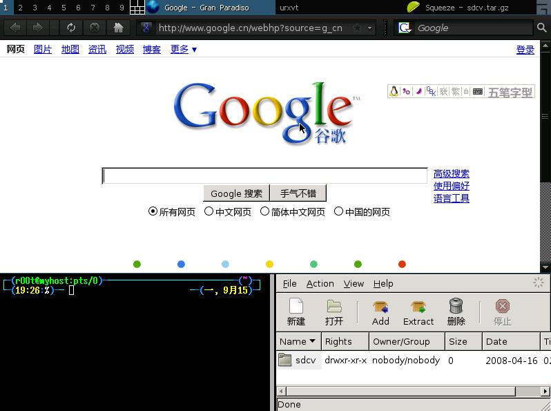

第 49 章 GNOME与KDE的战争
目录
作者:不详
虽然在商业方面存在竞争，GNOME与KDE两大阵营的开发者关系并没有变得更糟，相反他们都意识到支持对方的重要性—如果KDE和GNOME无法实现应用程序的共享，那不仅是巨大的资源浪费，而且将导致Linux出现根本上的分裂。
KDE 与GNOME是目前Linux/UNIX系统最流行的图形操作环境。从上个世纪九十年代中期至今，KDE和GNOME都经历了将近十年的漫漫历程，两者也都从最初的设计粗糙、功能简陋发展到相对完善的阶段，可用性逼近Windows系统。图形环境的成熟也为Linux的推广起到至关重要的作用，尽管 Linux以内核健壮、节省资源和高质量代码著称，但缺乏出色的图形环境让它一直难以在桌面领域有所作为，导致Linux桌面应用一直处于低潮。如果大家还有印象，一定会记得1999-2001年间Linux发展如火如荼，当时国内涌现出大量的Linux发行版厂商，但当用户发现Linux距离实用化还有十万八千里的时候，Linux热潮迅速冷却。业界也对此一度灰心失望，其中一部分厂商因无法盈利迅速销声匿迹，另一部分厂商则不约而同将重点放在服务器市场—与桌面市场形成鲜明对比的是，Linux以稳定可靠和低成本的优势在服务器领域获得了巨大的成功。
在一些Linux厂商放弃桌面化努力的同时，国际开源社群却不断发展壮大，自由的理念吸引越来越多一流的程序员参与。与商业模式不同，自由软件程序员在开始时都只是利用业余时间开发自己感兴趣的东西，并将其自由公开，这是一种不折不扣的贡献行为。尽管开发进度缓慢，但认同自由软件理念的开发者越来越多，一个个开源项目逐渐发展壮大。
在此期间一个被人忽视的重大事件就是商业巨头也积极参与进来，IBM、RedHat、SuSE、Ximian、 Novell、SUN、HP等商业公司都直接介入各个开源项目，这些企业或者是将自身的成果免费提供给开源社群，或者直接派遣程序员参与项目的实际开发工作，例如SuSE（现已为Novell收购）在KDE项目上做了大量的工作，RedHat、Ximian（现已为Novell收购）则全程参与Gnome 项目，IBM为Linux提供了大量的基础性代码，是推进Linux进入服务器领域的主要贡献者，SUN公司则将StarOffice赠送给开源社群，并资助成立著名的OpenOffice.org项目。这样，大量的自由软件程序员都可以从各个项目的基金会中领到薪水。在这一阶段，开源项目摆脱了程序员业余开发的模式，而由高水平的专职程序员主导，这也成为各个自由软件项目的标准协作模式。与商业软件公司不同，自由软件项目的参与者都是首先为个人兴趣而工作，他们的共同目标都是拿出品质最好的软件，在协作模式稳定成形之后，各个软件就进入到发展的快行道。进入2005年后，这些项目基本上都获得了丰硕的成果，其中最突出的代表就是Firefox浏览器的成功，而作为两大图形环境，KDE和GNOME分别发展到3.5和2.12版本，两者的可用性完全可以媲美Windows。更重要的是，开源社群的发展壮大为这些项目的未来发展奠定了坚实的基础：KDE项目将超越Windows作为自己的目标，力量更强大的 GNOME项目更是将开发目标定在超越Mac OS X的Aqua图形环境；Firefox则计划运用GPU的硬件资源来渲染图像，达到大幅度提高速度的目的；OpenOffice.org在努力提升品质的同时奠定了开放文档格式标准。除了上述主要项目之外，我们也看到如Mplayer播放器、Xine播放器、Thunderbird邮件客户端、SCIM输入平台等其他开源项目也在快速发展成熟之中，且几乎每一天都有新的项目在诞生。有意思的是，除了涉及到软件开发外，还出现了为Linux设计视觉界面的开放协作项目，全球各地有着共同目标的艺术家通过互联网组织到一起，共同为Linux系统设计一流的视觉界面、系统图标，而所有的自由软件程序员都有一个共同的目标，那就是开发出一流水准的软件提供给大众使用。这种基于挑战自我、带有浓烈精神色彩的软件开发模式成为商业软件之外的另外一极。现在，微软面对的并不是那些只在业余时间鼓捣代码的程序员，而是分布在全球各地、数量庞大、且拥有一流技术水平的开发者，这些开发者被有效地组织起来，形成一个个有序的协作团队，大量实力雄厚的商业公司在背后提供支持。虽然今天的Linux系统还无法在桌面领域被广为接纳，但只需要两、三年时间，高速进化的Linux平台将可达到全面进军桌面的水准，也正是看到其中的机会，Novell、RedHat等重量级Linux企业都不断在技术和市场推广方面加大投入，Linux 桌面化近在咫尺。
在介绍完必要的背景之后，我们将进入关于KDE与GNOME的技术专题。如果你是刚刚接触Linux的新手，一定会对KDE和GNOME感到困惑不已—为何会有两个功能重复、操作习惯迥异的图形环境？这不仅麻烦也耗费开发者精力。通过本文，你将获得清晰的答案。而更重要的是，我们将在本文中向大家介绍 KDE与GNOME的实际水平、各自的优点和未来发展趋势。如果你对Linux桌面应用有些兴趣，那么未来的 KDE/GNOME一定会让你感到震惊不已。
X Window 打造桌面环境
在介绍KDE和Gnome之前，我们有必要先来介绍UNIX/Linux图形环境的概念。对一个习惯Windows的用户来说，要正确理解UNIX /Linux的图形环境可能颇为困难，因为它与纯图形化Windows并没有多少共同点。Linux实际上是以UNIX为模板的，它继承了UNIX内核设计精简、高度健壮的特点，无论系统结构还是操作方式也都与UNIX无异。简单点说，你可以将Linux看成是UNIX类系统中的一个特殊版本。我们知道，微软Windows在早期只是一个基于DOS的应用程序，用户必须首先进入DOS后再启动Windows进程，而从Windows 95开始，微软将图形界面作为默认，命令行界面只有在需要的情况下才开启，后来的Windows98/Me实际上也都隶属于该体系。但在 Windows2000之后，DOS被彻底清除，Windows成为一个完全图形化的操作系统。但UNIX/Linux与之不同，强大的命令行界面始终是它们的基础，在上个世纪八十年代中期，图形界面风潮席卷操作系统业界，麻省理工学院（MIT）也在1984年与当时的DEC公司合作，致力于在UNIX系统上开发一个分散式的视窗环境，这便是大名鼎鼎的“X Window System”项目。不过，X Window（请注意不是XWindows）并不是一个直接的图形操作环境，而是作为图形环境与UNIX系统内核沟通的中间桥梁，任何厂商都可以在 XWindow基础上开发出不同的GUI图形环境。MIT和DEC的目的只在于为UNIX系统设计一套简单的图形框架，以使UNIX工作站的屏幕上可显示更多的命令，对于GUI的精美程度和易用程度并不讲究，毕竟那时候能够熟练操作UNIX的都是些习惯命令行的高手，根本不在乎GUI存在与否。1986 年，MIT正式发行X Window，此后它便成为UNIX的标准视窗环境。紧接着，全力负责发展该项目的X协会成立，XWindow进入了新阶段。与此同步，许多UNIX厂商也在X Window原型上开发适合自己的UNIXGUI视窗环境，其中比较著名的有SUN与AT&T联手开发的“Open Look”、IBM主导下的OSF（Open SoftwareFoundation，开放软件基金会）开发出的“Motif”。而一些爱好者则成立了非营利的XFree86组织，致力于在X86系统上开发XWindow，这套免费且功能完整的XWindow很快就进入了商用UNIX系统中，且被移植到多种硬件平台上，后来的Linux也直接从该项目中获益。当然，这些早期的XWindow环境都设计得很简单，许多GUI元素模仿于微软的Windows，但XWindow拥有一个小小的创新：当鼠标指针移动到某个窗口时，该窗口会被自动激活，用户无需点击便能够直接输入，简化了用户操作—这个特性在后来的KDE和Gnome中也都得到完整的继承。
由于必须以UNIX系统作为基础，XWindow注定只能成为UNIX上的一个应用，而不可能与操作系统内核高度整合，这就使得基于XWindow的图形环境不可能有很高的运行效率，但它的优点在于拥有很强的设计灵活性和可移植性。X Window从逻辑上分为三层：最底层的XServer（X服务器）主要处理输入/输出信息并维护相关资源，它接受来自键盘、鼠标的操作并将它交给X Client（X客户端）作出反馈，而由XClient传来的输出信息也由它来负责输出；最外层的XClient则提供一个完整的GUI界面，负责与用户的直接交互（KDE、Gnome都是一个X Client），而衔接X Server与XClient的就是“X Protocol(X通讯协议)”、它的任务是充当这两者的沟通管道。尽管UNIX厂商采用相同的XWindow，但由于终端的X Client并不相同，这就导致不同UNIX产品搭配的GUI界面看起来非常不一样。
图 49.1. X Window系统架构示意图

KDE项目的发起
MIT的X Window推出之后就成为UNIX图形界面的标准，但在商业应用上分为两大流派：一派是以Sun公司领导的OpenLook阵营，一派是IBM/HP领导的OSF(Open SoftwareFoundation)的Motif，双方经过多年竞争之后，Motif最终获得领先地位。不过，Motif只是一个带有窗口管理器（Window-Manager）的图形界面库（Widget-Library），而非一个真正意义上的GUI界面。经过协商之后IBM/HP与SUN决定将Motif与Open Look整合，并在此基础上开发出一个名为“CDE(Common Desktop Environment)”的GUI作为UNIX的标准图形界面。遗憾的是，Motif/CDE和UNIX系统的价格都非常昂贵，而当时微软的 Windows发展速度惊人并率先在桌面市场占据垄断地位，CDE则一直停留在UNIX领域提供给root系统管理员使用，直到今天情况依然如此。
图 49.2. KDE 1.0尽管设计粗糙，但它奠定了整个KDE项目的基础。

在上个世纪九十年代中期，以开源模式推进的Linux在开发者中已经拥有广泛的影响力。尽管X Window已经非常成熟，也有不少基于XWindow的图形界面程序，但它们不是未具备完整的图形操作功能就是价格高昂（如CDE），根本无法用于 Linux系统中。如果Linux要获得真正意义上的突破，一套完全免费、功能完善的GUI就非常必要。1996年10月，图形排版工具Lyx的开发者、一位名为MatthiasEttrich的德国人发起了KDE（Kool Desktop Environment）项目，与之前各种基于XWindow的图形程序不同的是，KDE并非针对系统管理员，它的用户群被锁定为普通的终端用户，MatthiasEttrich希望KDE能够包含用户日常应用所需要的所有应用程序组件，例如Web浏览器、电子邮件客户端、办公套件、图形图像处理软件等等，将UNIX/Linux彻底带到桌面。当然，KDE符合GPL规范，以免费和开放源代码的方式运行。
KDE项目发起后，迅速吸引了一大批高水平的自由软件开发者，这些开发者都希望KDE能够将Linux系统的强大能力与舒适直观的图形界面联结起来，创建最优秀的桌面操作系统。经过艰苦卓绝的共同努力，KDE 1.0终于在1998年的7月12日正式推出。以当时的水平来说，KDE1.0在技术上可圈可点，它较好的实现了预期的目标，各项功能初步具备，开发人员已经可以很好地使用它了。当然，对用户来说，KDE1.0远远比不上同时期的Windows 98来得平易近人，KDE 1.0中大量的Bug更是让人头疼。但对开发人员来说，KDE1.0的推出鼓舞人心，它证明了KDE项目开源协作的开发方式完全可行，开发者对未来充满信心。有必要提到的是，在KDE1.0版的开发过程中，SuSE、Caldera等Linux商业公司对该项目提供资金上的支持，在1999年，IBM、 Corel、RedHat、富士通-西门子等公司也纷纷对KDE项目提供资金和技术支持，自此KDE项目走上了快速发展阶段并长期保持着领先地位。但在 2004年之后，GNOME不仅开始在技术上超越前者，也获得更多商业公司的广泛支持，KDE丧失主导地位，其原因就在于KDE选择在Qt平台的基础上开发，而Qt在版权方面的限制让许多商业公司望而却步。
Qt是一个跨平台的C++图形用户界面库，它是挪威TrollTech公司的产品。基本上，Qt同XWindow上的 Motif、Open Look、GTK等图形界面库和Windows平台上的MFC、OWL、VCL、ATL是同类型的东西，但Qt具有优良的跨平台特性（支持 Windows、Linux、各种UNIX、OS390和QNX等）、面向对象机制以及丰富的API，同时也可支持2D/3D渲染和OpenGLAPI。在当时的同类图形用户界面库产品中，Qt的功能最为强大，MatthiasEttrich在发起KDE项目时很自然选择了Qt作为开发基础，也正是得益于 Qt的完善性，KDE的开发进展颇为顺利，例如Netscape5.0在从Motif移植到Qt平台上仅仅花费了5天时间。这样，当KDE1.0正式发布时，外界看到的便是一个各项功能基本具备的GUI操作环境，且在后来的发展中，Qt/KDE一直都保持领先优势。有必要提到的是，TrollTech公司实质性参与了KDE项目，如前面提到Netscape 5.0的移植工作就是由TrollTech的程序员完成，而KDE工程的发起者、MatthiasEttrich本人也在1998年离开学术界加入 TrollTech，并一直担任该公司的软件开发部主管，因此TrollTech公司对于KDE项目拥有非常强的影响力（当然不能说绝对掌握，毕竟KDE 开发工作仍然是由自由程序员协作完成的）。我们前面提到，KDE采用GPL规范进行发行，但底层的基础Qt却是一个不遵循GPL的商业软件，这就给KDE 上了一道无形的枷锁并带来可能的法律风险。一大批自由程序员对KDE项目的决定深为不满，它们认为利用非自由软件开发违背了GPL的精神，于是这些GNU 的狂热信徒兵分两路：其中一部分人去制作Harmonny，试图重写出一套兼容Qt的替代品，这个项目虽然技术上相对简单，但却没有获得KDE项目的支持；另一路人马则决定重新开发一套名为“GNOME（GNU Network ObjectEnvironment）”的图形环境来替代KDE，一场因为思想分歧引发的GUI之战开始了。
图 49.3. Qt是整个KDE的基础，它采用双重授权。
GNOME与KDE交替发展
GNOME项目于1997年8月发起，创始人是当时年仅26岁的墨西哥程序员Miguel DeIcaza。关于GNOME的名称有一个非常有趣的典故：Miguel到微软公司应聘时对它的ActiveX/COMmodel颇有兴趣，GNOME（Network Object Model）的名称便从此而来。GNOME选择完全遵循GPL的GTK图形界面库为基础，因此我们也一般将GNOME和KDE两大阵营称为 GNOME/GTK和KDE/Qt。与Qt基于C++语言不同，GTK采用较传统的C语言，虽然C语言不支持面向对象设计，看起来比较落后，但当时熟悉C 语言的开发者远远多于熟悉C++的开发者。加之GNOME/GTK完全遵循GPL版权公约，吸引了更多的自由程序员参与，但由于KDE先行一步，且基础占优势，一直都保持领先地位。1999年3月，GNOME 1.0在匆忙中推出，稳定性奇差无比，以至于许多人笑称GNOME 1.0还没有KDE 1.0Alpha稳定，而同期的KDE 1.1.2无论在稳定性还是功能上都远胜于GNOME，直到10月份推出的GNOME1.0.55版才较好解决了稳定性问题，给GNOME重新赢回声誉。由于思想分歧，当时GNOME的开发者与KDE的开发者在网络上吵得天翻地覆，几乎达到相互仇视的地步。但不管怎么说，GNOME都跌跌撞撞迈出了第一步，尽管那时KDE几乎是所有Linux发行版默认的桌面环境。
图 49.4. KDE2.0拥有丰富的应用软件，实力明显超过GNOME
GNOME的转机来自于商业公司的支持。当时Linux业界的老大RedHat很不喜欢KDE/Qt的版权，在GNOME项目发起后RedHat立刻对其提供支持。为了促进GNOME的成熟，RedHat甚至专门派出几位全职程序员参与GNOME的开发工作，并在1998年1月与GNOME项目成员携手成立了RedHat高级开发实验室。1999年4月，Miguel与另一名GNOME项目的核心成员共同成立HelixCode公司为GNOME提供商业支持，这家公司后来更名为Ximian，它事实上就成为GNOME项目的母公司，GNOME平台上的Evolution邮件套件便出自该公司之手。进入 2000年之后，一系列重大事件接连发生，首先，一批从苹果公司出来的工程师成立Eazel公司，为GNOME设计用户界面和Nautilus（鹦鹉螺）文件管理器。同年8月，GNOME基金会在Sun 、RedHat、Eazel、HelixCode（Ximian）的共同努力下正式成立，该基金会负责GNOME项目的开发管理以及提供资金，Miguel本人则担任基金会的总裁。此时，GNOME获得许多重量级商业公司的支持，如惠普公司采用GNOME作为HP-UX系统的用户环境，SUN则宣布将StarOffice套件与GNOME环境相整合，而GNOME也将选择OpenOffice.org作为办公套件，IBM公司则为 GNOME共享了SashXB极速开发环境。同时，GNOME基金会也决定采用Mozilla作为网页浏览器。KDE阵营也毫不示弱，在当年10月份推出万众瞩目的KDE 2.0。KDE2.0堪称当时最庞大的自由软件，除了KDE平台自身外，还包括Koffice办公套件、Kdevelop集成开发环境以及 Konqueror网页浏览器。尽管这些软件都还比较粗糙，但KDE 2.0已经很好实现了MatthiasEttrich成立KDE项目的目标。也是在这个月，TrollTech公司决定采用GPL公约来发行Qt的免费版本，希望能够以此赢得开发者的支持。这样，Qt实际上就拥有双重授权：如果对应的Linux发行版采用免费非商业性的方式进行发放，那么使用KDE无须向 TrollTech交纳授权费用；但如果Linux发行版为盈利性的商业软件，那么使用KDE时必须获得授权。由于TrollTech是商业公司且一直主导着KDE的方向，双许可方式不失为解决开源与盈利矛盾的好办法。TrollTech宣称，双许可制度彻底解决了KDE在GPL公约方面的问题，但 RedHat并不喜欢，RedHat不断对GNOME项目提供支持，希望它能够尽快走向成熟，除RedHat之外的其他Linux厂商暂时都站在KDE这一边，但他们同时也在发行版中捆绑了GNOME桌面。
在2001-2002年，火热一时的Linux运动开始陷入低潮期，几乎所有的厂商都发现桌面Linux版本不可能盈利，而易用性的不足也让业界不看好 Linux进入桌面的前途。但在服务器市场，Linux发展势头非常迅猛，直接对UNIX和WindowsServer造成威胁。不过，秉承自由软件理念的开发者们并不理会外界的论调，他们一直将Linux桌面化作为目标，GNOME项目和KDE项目都在这期间获得完善发展。2001年4 月，GNOME1.4发布，它修正了之前版本的Bug，功能也较为完善，但在各方面与KDE依然存在差距；同年8月，KDE发展到2.2版本。2002年 4月，KDE跳跃到3.0版本，它以Qt 3.0为基础，各项功能都颇为完备，具备卓越的使用价值；两个月后，GNOME阵营也推出2.0版本，它基于更完善的GTK2.0图形库。进入到2003 年后，KDE与GNOME进入真正意义上的技术较量。1月份，KDE 3.1推出，而GNOME2.4则在随后的2月份推出，两大平台都努力进行自我完善。也是在这一年，Linux商业界出现一系列重大的并购案：1月份，Novell公司宣布收购德国的SuSE Linux，而SuSELinux是地位仅次于RedHat的全球第二大Linux商业企业；8月，Novell接着将GNOME的母公司Ximian收归旗下。这两起并购案让Novell成为实力与RedHat不相上下的强大Linux企业，而Novell和RedHat就成为能够影响Linux未来的两家企业。在图形环境上，SuSE一向选择KDE，并在KDE身上投入相当多的精力，在被Novell并购后，SuSE的桌面发行版尽管还侧重于KDE，但同样不喜欢Qt授权的Novell已经开始向GNOME迁移。
图 49.5. GTK库是GNOME项目的基础，它完全采用GPL授权因此获得广泛支持。
GNOME获得商业公司的支持
进入2004年后，KDE与GNOME依然保持快速发展，KDE阵营分别在2月份和8月份推出3.2、3.3版本，GNOME则在3月和9月推出2.6和 2.8，两者的版本升级步幅旗鼓相当。到3.3版本的KDE已经非常成熟，它拥有包括KOffice、Konqueror浏览器、Kmail套件、KDE 即时消息在内的一大堆应用软件，且多数都达到可用标准，功能上完全不亚于Windows 2000。而GNOME更是在此期间高速发展，GNOME2.8版本的水准完全不逊于KDE3.3，而且此时两者的技术特点非常鲜明：GNOME讲究简单、高效，运行速度比KDE更快；KDE则拥有华丽的界面和丰富的功能，使用习惯也与微软Windows较类似。商业支持方面，RedHat还是 GNOME的铁杆支持者，IBM、SUN、Novell、HP等重量级企业也都选择GNOME，而KDE的主要支持者暂时为SuSE、Mandrake以及中科红旗、共创开源在内的国内发行商。2005年，厚积薄发的GNOME开始全面反超，3月份的2.10、9月份的2.12让GNOME获得近乎脱胎换骨的变化，加之OpenOffice.org 2.0、Firefox1.5等重磅软件的出台让GNOME如虎添翼；KDE方面则分别在3月和11月推出3.4和3.5，其中KDE3.5也逼近完美境地，我们认为它的水平与GNOME2.12不相伯仲。但KDE在商业支持方面每况愈下，Novell在11月宣布旗下所有的商业性发行版将使用GNOME 作为默认桌面（仍会对KDELibraries提供支持），SuSELinux桌面版则会对KDE与GNOME提供同等支持，而社区支持的 OpenSuSE仍将使用KDE体系—但谁都明白GNOME将成为Novell的重心，KDE只是活跃在免费的自由发行版中。
图 49.6. KDE3.5可实现半透明和阴影效果，界面华丽、软件丰富。
到这里，我们发现一个颇富戏剧性的结局：致力于商业化的KDE反而失去了重量级商业企业的支持，尽管一些中小规模的Linux企业因技术能力问题将继续支持KDE，但它的商业前途有限。而遵循GPL、完全不以商业化为目的的GNOME反而在该领域大获成功。许多Linux发烧友都不明白为什么优秀的KDE 会受到如此待遇，其实道理非常简单—没有哪一家重量级企业喜欢受制于人，也许KDE的Qt不需要很多授权费，但谁知道TrollTech公司以后会不会漫天要价？既然有免费的GNOME可以选择，那为什么不呢？基于此种理由，RedHat、Novell两家最大的Linux企业和SUN都采用GNOME，而它们对GNOME的鼎力支持也让该项目可拥有足够多的技术保证，为今后的高速发展奠定坚实的基础。需要纠正一个可能的误解，虽然Novell收购了 Ximian，但RedHat并没有受到太大影响，双方对GNOME的贡献都是相互共享的，因为GNOME以GPL自由版权公约发行，合作即共赢。至于 KDE项目，虽然它失去这些商业巨头的支持，但没有能力转换桌面的中小Linux厂商将继续追随KDE，而且在非商业的社区Linux发行版中，KDE依然有强大的生命力。
图 49.7. GNOME 1.4解决了稳定性问题，功能初步完善

虽然在商业方面存在竞争，GNOME与KDE两大阵营的开发者关系并没有变得更糟，相反他们都意识到支持对方的重要性。如果KDE和GNOME无法实现应用程序的共享，那不仅是巨大的资源浪费，而且将导致Linux出现根本上的分裂。事实上，无论是GNOME的开发者还是KDE的开发者，他们都有着共同的目标，就是为Linux开发最好的图形环境，只是因为理念之差而分属不同的阵营。KDE与GNOME的商业竞争对开发者们其实没有任何利益影响（只有 TrollTech会受影响），基于共同的目的，KDE与GNOME阵营大约从2003年开始逐渐相互支持对方的程序—只要你在KDE环境中安装GTK 库，便可以运行GNOME的程序，反之亦然。经过两年多的努力，KDE和GNOME都已经实现高度的互操作性，两大平台的程序都是完全共享的，例如你可以在GNOME中运行Konqueror浏览器、Koffice套件，也可以在KDE中运行Evolution和OpenOffice.org，只不过执行本地程序的速度和视觉效果会好一些。在未来一两年内，KDE和GNOME将进行更高等级的融合，但两者大概永远都不会合为一体—GNOME还是 GNOME，KDE也还是KDE。或许你觉得这是浪费开发资源而且很可能让用户无从选择，但我们告诉你这就是Linux，它与Windows和 MacOSX有着绝然不同的文化。更何况全球有越来越多自由软件开发者（所以不必担心浪费开发资源），Linux用户的使用偏好也不可能总是相同，保持两个并行发展的图形环境项目没有什么不妥。至于GNOME项目和KDE项目的开发者们，曾经因为理念不同而吵得天翻地覆，但他们现在尽释前嫌，因为所有人都意识到，他们其实彼此需要，团结在一起可以让他们在硬件厂商面前有更大的发言权，从而促使厂商在推出Windows驱动的同时也提供相应的Linux版本，而且彼此可以相互借鉴优秀的设计，确保Linux拥有一个最出色的图形桌面环境。
图 49.8. GNOME 2.12保持惯有的简洁和高效
KDE与GNOME走向融合
2006年，GNOME与KDE都站在一个全新的起点，获得商业公司和更多自由程序员支持的GNOME踌躇满志，将超越的目光放在Mac OSX系统。也许你认为WindowsVista的半透明和三维界面将Linux远远抛在后面，那么我们告诉你这是绝对的误解，GNOME目前已经可以实现类似的效果，Novell在前几个月就向外界作过详细的演示。当前的KDE也可支持相当不错的半透明和阴影特效，技术上毫不落后于GNOME。现在，GNOME项目朝向革命性的3.0版本迈进，KDE则致力于开发同样有重大技术变革的4.0，这两个成果大概在2007年可进入现实，届时Linux 系统将具备更卓越的可用性。也就是说，Linux桌面应用的全面铺开指日可待，而除了开发者和厂商的努力外，如何向企业和个人用户推广以及提供培训将是厂商要考虑的主要问题，我们今天恰好站在这样的一道门槛上。